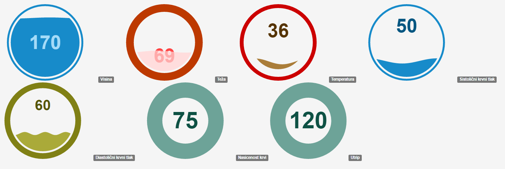

Opis ideje, ki jo aplikacija podpira
Ta aplikacija je namenjena tako pacientom kot izbranim zdravnikom. In sicer: pacineti lahko sproti vnašajo in preverjajo podatke o svojem zdravstvenem stanju (telesna temperatura, srčni utrip, ...),
ter tako ugotavljajo odstopanja od normalnega zdravstvenega stanja. V primeru vidnejših odstopanj lahko hitreje ukrepajo. Možna nadgradnja aplikacije bi bila integracija z mobilnimi (oz. priročnimi)
merilniki vitalnih znakov, ki bi sproti vnašali podatke v aplikacijsko bazo in v primeru večjih odstopanj opozorili nosilca ali izbranega zdravnika. Do teh podatkov bi lahko tudi sproti dostopali
zdravsteni specialisti, ki bi nadzorovali bolnikovo zdravsteno stanje in pravočasno izvajali morebitne preventivne ukrepe.
Uporabljeni zunanji viri podatkov
Ker je za zdravje zelo pomembna tudi prehrana, sem se odločil v aplikacijo vključiti Embedded Facebook timeline. In sicer
Healthy Eating on a Student Budget ,
ter
Health digest ,
ker prva uporabniku posreduje informacije o zdravi prehrani po ugodnih cenah(za študenta dodatna koristnost), druga pa splošne nasvete o zdravem življenju.
Aplikaciji sem vključil v stran tako, da sem naredil okno, v katerem se
pojavi določen Facebook timeline in to okno povezal s prej omenjenima stranema.
Master/detail načrtovalski vzorec
Master načrtovalski vzorec je naslednji: Aplikacija vzame podane podatke o uporabnikovem zdravstvenem stanju, jih prikaže na bolj pregleden način, hkrati prikaže tabelo,
v kateri so napisane idealne (oz. normalne) vrednosti osnovnih parametrov zdravja.
Uporabljena tehnika za vizualizacijo podatkov
Uporabil sem
D3 Liquid Fill Gauge , ker se mi je zdel način prikaza zanimiv, lep in čist,
hkrati pa lahek za razumeti. Za razliko od nekaterih drugih načinov prikazovanja je imela ta aplikacija napisano celotno kodo že na svoji strani.
